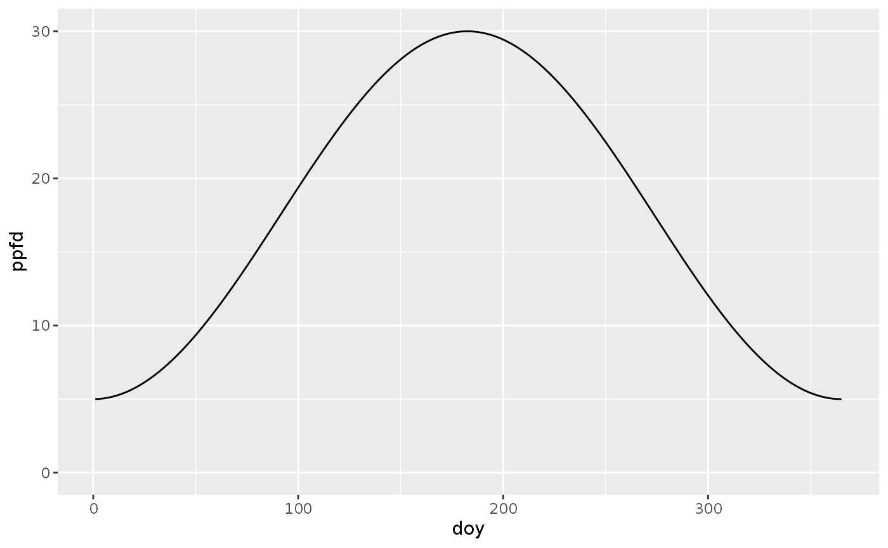
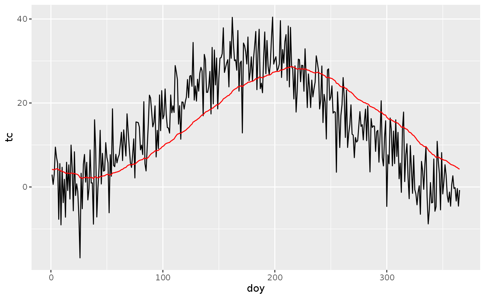
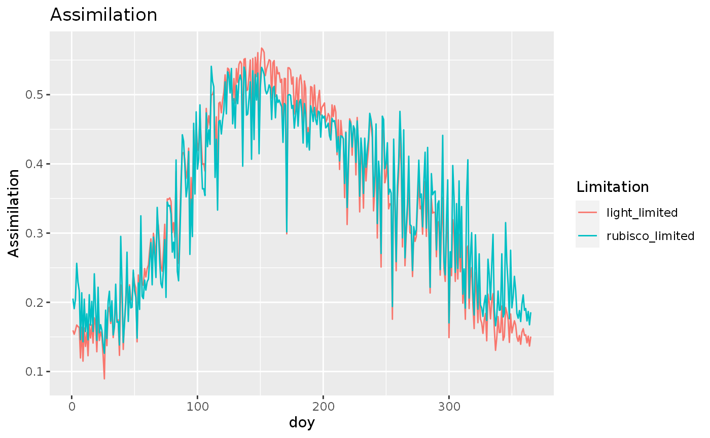
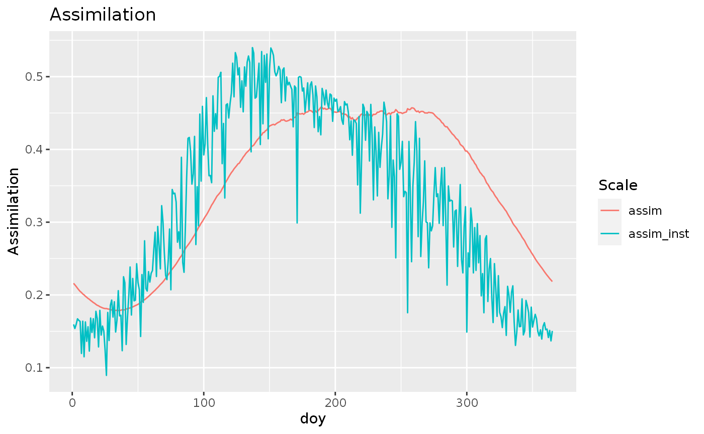
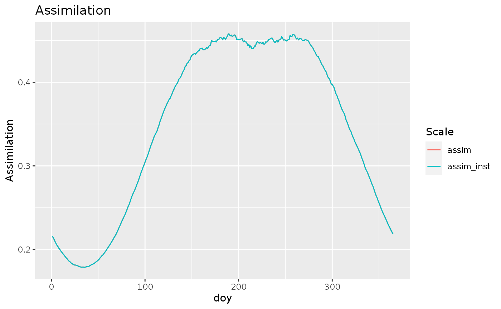
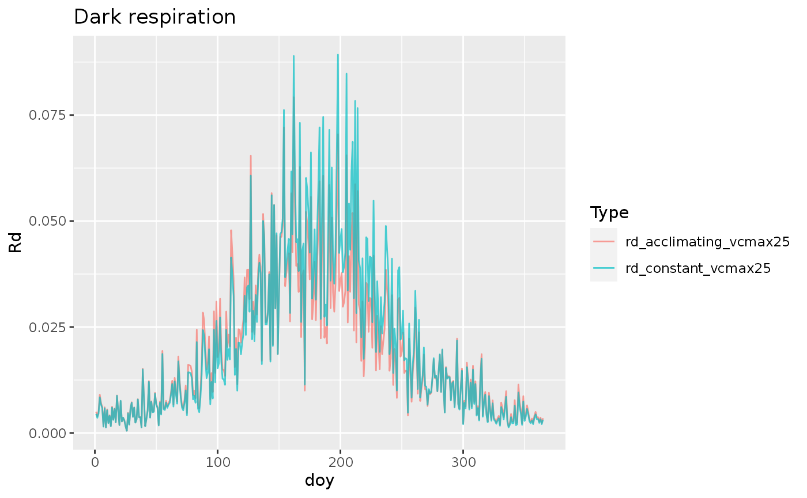
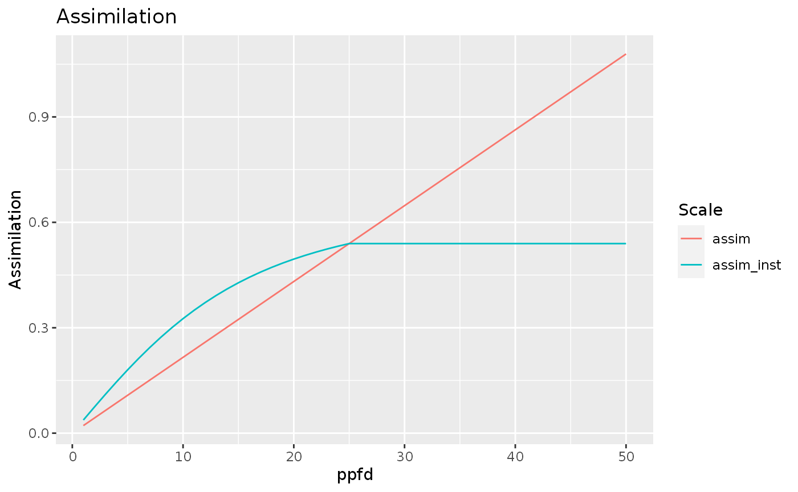

Acclimated versus instantaneous response
Beni Stocker
2021-05-19
Source:vignettes/accl_inst.Rmd
accl_inst.RmdMotivation
The P-model predicts the “acclimated” response of photosynthetic parameters and stomatal sensitivity (Vcmax, Jmax, \(\xi\)) to the environment and reflects the acclimation process by balanced investments to maintaining the photosynthetic apparatus and transpiration stream (essentially a trade-off between the capacities of light-harvesting and dark reactions on the one hand and stomatal aperture on the other hand). Irrespective of investments into the different photosynthetic capacities, there is an instantaneous response of different rates that are governed by enzymatic processes or simple physics. This means that the P-model (the results returned by a rpmodel() function call) doesn’t predict instantaneous response, but only the more slowly acclimating responses. However, the instantaneous rates are sometimes relevant to consider, e.g., for comparison to observations. Using the same underlying principles and parametrisations as used in the P-model, we can calculate the instantaneous response from instantaneous environmental conditions and the FvCB photosynthesis model and the acclimated response from the P-model.
In order to make this separation of the acclimated and instantaneous response more explicit, two functions are introduced:
-
dampen_vec(): Applies an exponential dampening with a specified time scale to all inputs (environmental variables) to which photosynthesis acclimates. -
inst_rpmodel(): Calculates instantaneous responses from outputs ofrpmodel().
Information flow for separating the acclimated and instantaneous responses with rpmodel.
This explicit separation allows for a clear application of the P-model to time series data which is given at a temporal resolution that is higher than the typical acclimation time scale. Below is a description of the theory and an example that illustrates such an application.
Theory
The derivation of acclimated quantities Vcmax, Jmax, and \(\xi\) are described in Stocker et al., 2020. They can be used to calculate stomatal conductance \(g_s\), leaf internal CO2 concentration \(c_i\), and the assimilation rates \(A_J\) and \(A_C\) by simulataneously solving Eqs. C1, 5, in Stocker et al., 2020 and the standard FvCB equations for \(A_J\) and \(A_C\). These are:
\[ g_s = \left( 1 + \frac{\xi}{\sqrt{D}} \right) \frac{A}{c_a - \Gamma^{\ast}} \]
\[ A = g_s(c_a - c_i) \]
\[ A_J = I_\text{abs} \; \varphi_0 \frac{c_i - \Gamma^\ast}{c_i + 2 \Gamma^\ast} L \] \[ A_C = V_\text{cmax} \frac{c_i - \Gamma^\ast}{c_i + K} \] \[ A = \min(A_C, A_J) \]
With \(L = \frac{1}{\sqrt{1 + \left( \frac{4\varphi_0 I_\text{abs}}{J_\text{max}} \right)^2}}\)
Example
Synthetic data
We first create a data frame of daily inputs \(X(t)\) for one year. This is some syntetic data with a seasonality.
##
## Attaching package: 'dplyr'## The following objects are masked from 'package:stats':
##
## filter, lag## The following objects are masked from 'package:base':
##
## intersect, setdiff, setequal, union
library(ggplot2)
df <- tibble(doy = 1:365) %>%
mutate(
tc = 30 * (sin(doy*pi/(365)))^2 + rnorm(365, mean = 0, sd = 5),
vpd = 1000 + rnorm(365, mean = 0, sd = 50),
co2 = rep(400, 365),
fapar = rep(1, 365),
ppfd = 25 * (sin(doy*pi/(365)))^2 + 5
)
df %>%
ggplot(aes(doy, tc)) + geom_line()

Dampen inputs
Next, calculated temporally damped input time series. This can be done with the function dampen_vec (newly added for rpmodel package version 1.2). Here we chose a dampening (e-folding) time scale of 40 days (tau = 40).
library(rpmodel)
df_damped <- df %>%
mutate_at(vars(one_of(c("tc", "vpd", "co2", "fapar", "ppfd"))), dampen_vec, tau = 40)
ggplot() +
geom_line(data = df, aes(doy, tc)) +
geom_line(data = df_damped, aes(doy, tc), color = "red")
Calculate instantaneous response
Using the acclimated quantities, we can now calculate daily instantaneous rates using the same underlying parametrisations (for assimilation, etc.). This uses acclimated Vcmax, Jmax, and \(\xi\) from the rpmodel call and applies the FvCB photosynthesis parametrisation (the same as is underlying the P-model theory), with its non-linear dependency of \(A_J\) to absorbed light. The P-model application as described here thus describes the non-linearity of absorbed light and assimilation and the strong temperature dependency of respiration at the fast time scale (at which photosynthesis is not acclimated), and at the same time the emergent linearity between absorbed light and assimilation and acclimating respiration at the longer time scale. This emergent behavior follows from the P-model theory.
df_out <- df %>%
left_join(dplyr::select(df_out, doy, out_pmodel), by = "doy") %>%
mutate(out_inst = purrr::pmap(dplyr::select(., x = out_pmodel, tc, vpd, co2, fapar, ppfd),
inst_rpmodel,
elv = 0,
kphio = 0.05))

The curves should be identical if the damped forcing is provided as input to inst_rpmodel().
## using damped inputs here
df_out2 <- df_damped %>%
left_join(dplyr::select(df_out, doy, out_pmodel), by = "doy") %>%
mutate(out_inst = purrr::pmap(dplyr::select(., x = out_pmodel, tc, vpd, co2, fapar, ppfd),
inst_rpmodel,
elv = 0,
kphio = 0.05))
Ok.
The difference between an acclimating respiration (using acclimating Vcmax25 and the instantaneous temperature scaling of Rd), vs. a hypothetical non-acclimating respiration (using a seasonally constant mean Vcmax25 and the same instantaneous temperature scaling of Rd) is illustrated below. 
df_ramp <- tibble(
idx = seq(1, 50),
tc = rep(15, 50),
vpd = rep(1000, 50),
co2 = rep(400, 50),
fapar = rep(1, 50),
ppfd = seq(1, 50)
)
df_out <- df_ramp %>%
mutate( out_pmodel = purrr::pmap(dplyr::select(., -idx), rpmodel,
elv = 0,
kphio = 0.05,
beta = 146,
c4 = FALSE,
method_optci = "prentice14",
method_jmaxlim = "wang17",
do_ftemp_kphio = FALSE
) )
df_out <- df_ramp %>%
left_join(dplyr::select(df_out, idx, out_pmodel), by = "idx") %>%
mutate(out_pmodel_mid = out_pmodel[25]) %>%
mutate(out_inst = purrr::pmap(dplyr::select(., x = out_pmodel_mid, tc, vpd, co2, fapar, ppfd),
inst_rpmodel,
elv = 0,
kphio = 0.05))